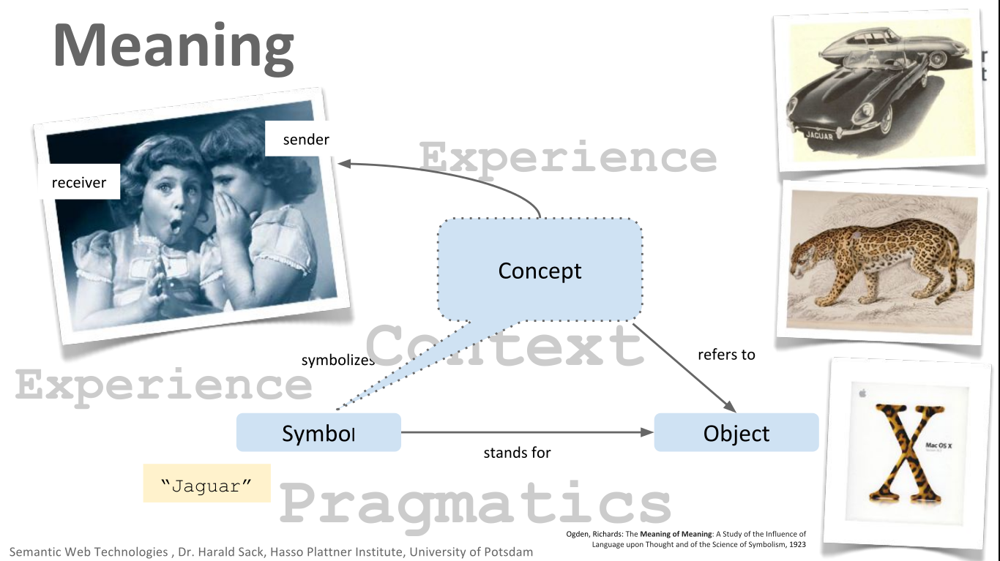

WORKSHOP SEMANTIC WEB
Introduction to Semantic Web
oleh
Syamsul Muttaqin
Books
Semantic Web ?
”The Semantic Web is an extension to the current Web in which information is given Well-defined meaning, better enabling computers ans people to work in cooperation”-- Tim Berners-Lee --
”Web yang memiliki konten yang dapat dipahami oleh manusia dan mesin”
Kendala Web saat ini
-
Halaman web dibangun dengan menggunakan HTML
- Presentasi konten
- Membangun hyperlink antar halaman
- Konten hanya dapat dipahami oleh manusia
- Konten tidak memiliki makna yang eksplisit sehingga komputer sulit untuk memahami makna yang terkandung di dalamnya
Information Retrieval Problems
- Bagaimana menangani sifat ambigu bahasa alami
-
Sebuah kata memiliki banyak makna
- Kijang ?
- Apple ?
-
Banyak kata/frasa memiliki makna sama
- Muka <-> Wajah
- Tiba <-> Datang
- UGM <-> Universitas Gadjah Mada
Komunikasi sukses jika...
Sender dan Receiver memiliki konteks pemahaman yang sama tentang sebuah konsep”...kelangkaan menyebabkan harga Apel naik...”
Memahami Konsep
*image by Dr Harald Sack's slide
Tujuan semantic web
- Memberikan makna eksplisit tentang sebuah konsep
- Menghilangkan sifat ambigu pada bahasa alami
- Mengajarkan mesin untuk memahami konteks
dengan cara...
...memberikan metadata pada setiap konsep yang dibicarakan
Sehingga diharapkan...
-
Komunikasi Machine to Machine dapat terbentuk tanpa campur tangan manusia
- Smart agent
- Akurasi hasil pencarian lebih tinggi
- Tidak ada misleading information
- Mesin dapat memahami informasi yang bersifat eksplisit
Semantic web stack